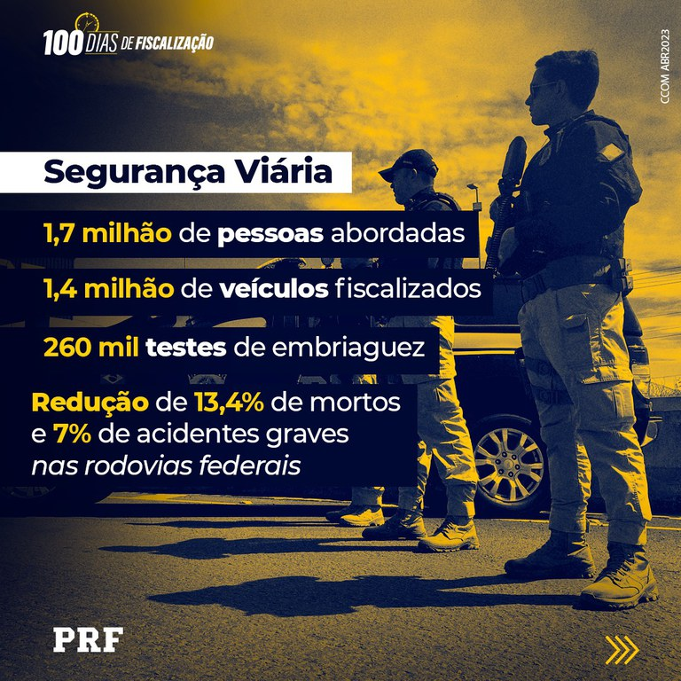

A PRF (Polícia Rodoviária Federal) é uma força policial brasileira que se dedica à segurança nas rodovias federais e à prevenção e repressão de crimes relacionados à malha viária.
Criada em 1928, sua missão principal é garantir a segurança viária,
fiscalizar o trânsito, prevenir acidentes e combater a criminalidade nas rodovias federais.
História e Evolução:
A PRF surgiu em 1928, inicialmente como "Polícia de Estradas", criada pelo então presidente Washington Luís. Em 1945, passou a ser chamada de Polícia Rodoviária Federal.
Ao longo do tempo, a PRF ampliou suas atividades, incluindo a educação no trânsito e a colaboração com outras forças policiais.
Atualmente, a PRF é subordinada ao Ministério da Justiça e Segurança Pública.
AFunções e Atribuições:
Segurança Viária:
A PRF fiscaliza o trânsito, combate infrações e trabalha na prevenção de acidentes.
Prevenção e Repressão:
A PRF investiga e combate crimes relacionados à malha viária, como roubo de cargas e crimes contra o trânsito.
Fiscalização:
A PRF realiza fiscalizações em veículos e pessoas, buscando garantir a segurança e a legalidade.
Educação no Trânsito:
A PRF promove ações de educação para o trânsito, com o objetivo de conscientizar sobre as regras e a importância da segurança.
Colaboração:
A PRF colabora com outras forças policiais em operações e investigações, contribuindo para a segurança pública em todo o país.
Estrutura e Operações:
A PRF possui uma vasta rede de postos e unidades em todo o território nacional, cobrindo as rodovias federais.
A PRF utiliza diversas tecnologias e equipamentos para realizar suas operações, como radares, câmeras e sistemas de comunicação.
Os agentes da PRF são treinados para lidar com diversas situações, desde a fiscalização de trânsito até a investigação de crimes.
Importância:
A PRF desempenha um papel fundamental na segurança das rodovias federais, contribuindo para a redução de acidentes e a prevenção de crimes.
A atuação da PRF é essencial para garantir a livre circulação de pessoas e cargas nas rodovias, promovendo o desenvolvimento econômico e social.
A PRF é uma força policial respeitada e reconhecida pela sociedade, que contribui para a segurança pública em todo o país.
Ser um Policial Rodoviário Federal (PRF) pode ser atraente por diversos motivos. A carreira oferece remuneração competitiva, estabilidade no cargo,
possibilidade de crescimento e a oportunidade de contribuir para a segurança nas rodovias federais. Além disso, a PRF oferece diversos benefícios,
como plano de saúde, auxílio-alimentação e aposentadoria integral com vantagens.
Motivos para ser um Policial Rodoviário Federal:
Remuneração e benefícios:
A PRF oferece salários atrativos e diversos benefícios, como plano de saúde, auxílio-alimentação e auxílio-creche, além de gratificações por trabalho fora da escala normal.
Estabilidade e crescimento:
O cargo na PRF é de carreira, com possibilidade de progressão funcional, o que garante estabilidade e oportunidades de crescimento profissional.
Segurança nas rodovias:
A PRF atua na segurança viária, prevenindo e reprimindo crimes nas rodovias federais, contribuindo para a segurança de motoristas e passageiros.
Oportunidade de trabalhar em diferentes locais:
A PRF está presente em todo o Brasil, oferecendo a oportunidade de trabalhar em diferentes estados e regiões, vivenciando diversas culturas e cenários.
Desafio e aprendizado:
A função de PRF envolve diferentes atividades, desde o patrulhamento e fiscalização até o combate ao crime e a atuação em situações de emergência,
o que oferece um ambiente de trabalho desafiador e de constante aprendizado.
Contribuição para a sociedade:
Ser um PRF é contribuir para a segurança pública e a proteção de vidas, atuando na prevenção de acidentes e no combate ao crime, o que pode ser muito gratificante.
Ao considerar a carreira na PRF, é importante analisar as diferentes funções, os requisitos para o concurso e as perspectivas de crescimento,
para que se possa tomar uma decisão informada e alinhada com os objetivos de vida.
